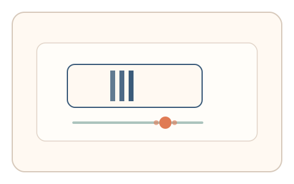
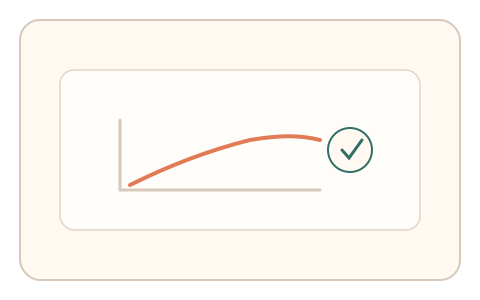

#84
Morphological Analysis - Combination Batches
已扩展
闪烁自适应爬坡
逐步提高闪烁频率，让用户在“刚不再闪烁”时停下，以适应阈值与回弹曲线验证真实性。
概念原文
闪烁频率逐步提高，用户在“刚不再闪烁”时停下，记录适应/回弹曲线并与个体基线比对。任务结构为自适应递进，信号形态为阈值调节与回弹曲线。
使用个人视觉适应曲线作为验证，而非固定阈值。
研究背景
人类对闪烁频率的敏感度存在个体差异，且在适应过程中会出现稳定的阈值与回弹曲线。通过记录阈值位置与回弹行为，可形成难以被脚本稳定拟合的视觉信号。
核心机制
- 闪烁频率缓慢爬升并提示用户观察。
- 用户在主观“刚不再闪烁”的位置停止。
- 记录阈值位置与回弹调整曲线。
- 与个体或群体基线进行比较。
用户流程
- 步骤 1：用户看到闪烁目标，频率逐步提高。
- 步骤 2：用户在临界点停止并微调。
- 步骤 3：系统记录阈值与回弹曲线并判定。
判定信号
临界闪烁阈值
人类对临界融合频率存在稳定区间。
回弹与微调曲线
真实用户会出现自然的回调与确认过程。
判定逻辑
阈值需落在人类分布区间，回弹曲线具有人类特征；过度一致或无回弹判异常。
对抗面
- 脚本直接选择固定阈值
- 模拟线性调整曲线进行伪造
防御与缓解
- 随机化闪烁样式与爬升速度
- 加入轻微亮度扰动降低固定阈值价值
- 叠加停顿与微调信号进行多信号判定
可达性与风险
提供更慢频率范围与替代任务，避免对光敏用户造成不适。
- 光敏用户可能触发不适或误拒
- 显示设备刷新率影响阈值判断
可视化状态

状态 1：闪烁爬升
闪烁频率逐步提高。

状态 2：阈值停止
用户停在主观临界点并微调。

状态 3：曲线判定
根据阈值与回弹曲线判定。
参考资料
Flicker fusion threshold
说明临界闪烁融合频率与个体差异。
Visual adaptation
说明视觉适应与阈值变化。